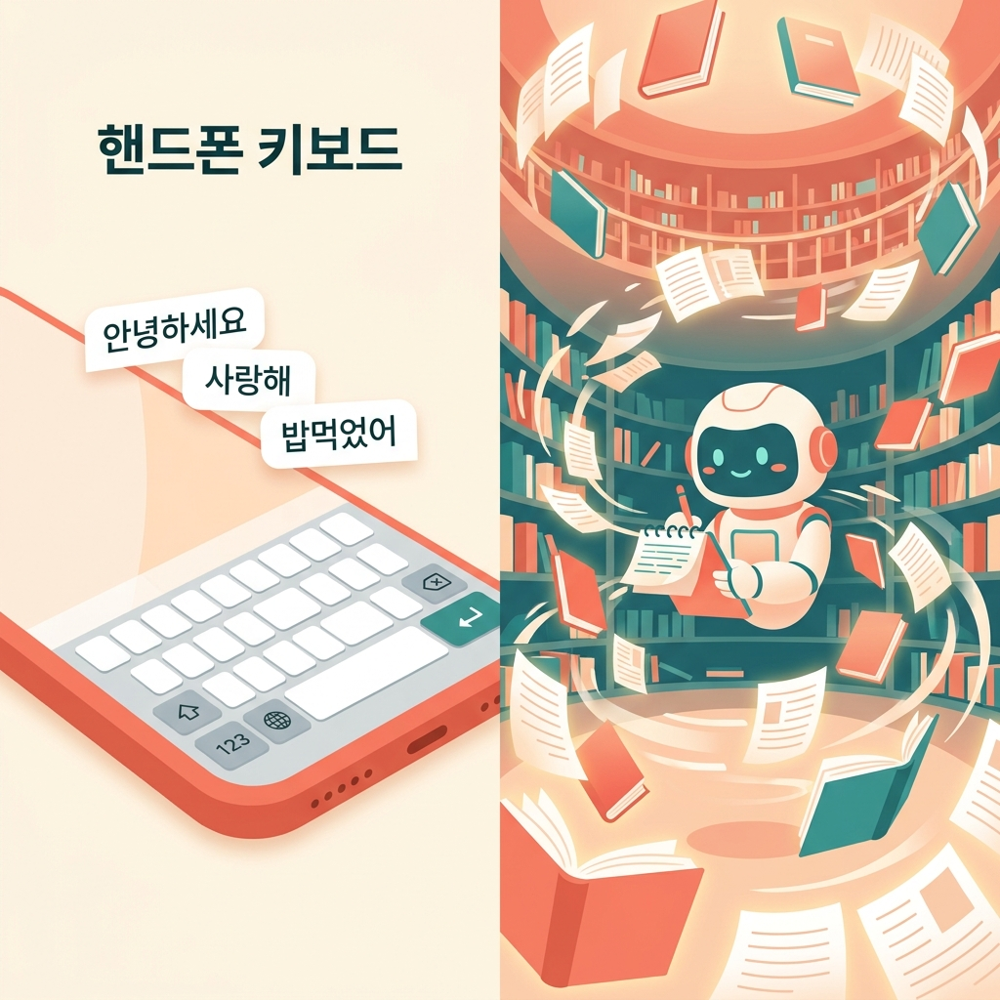
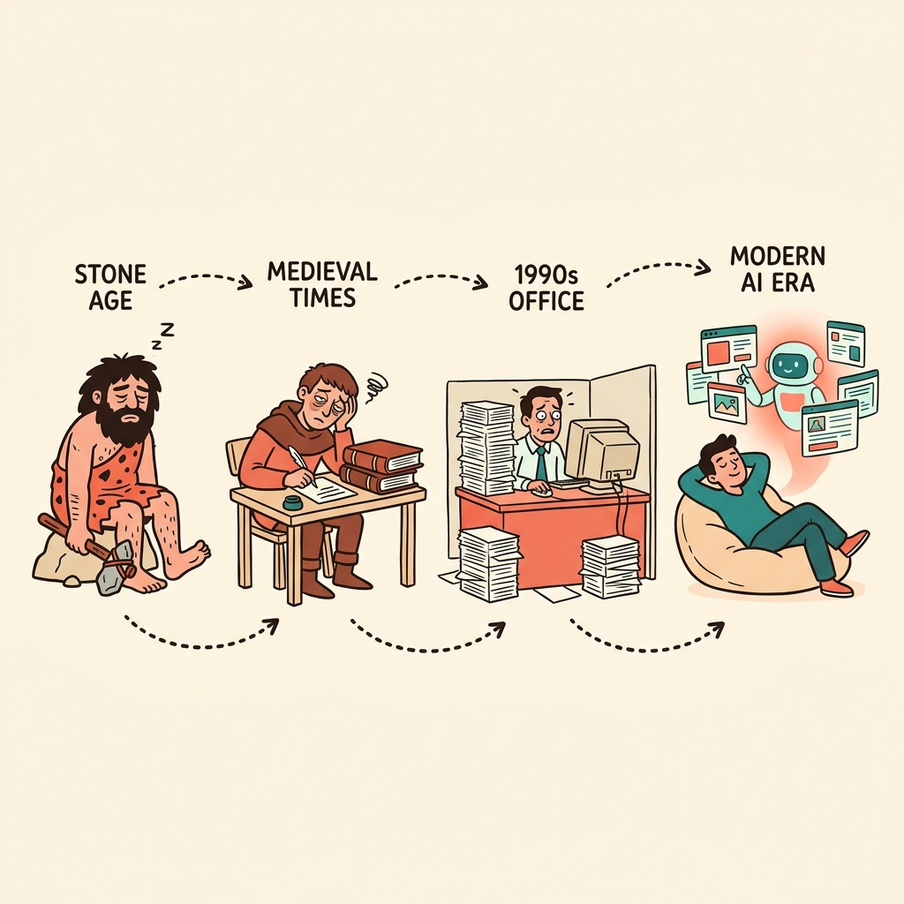
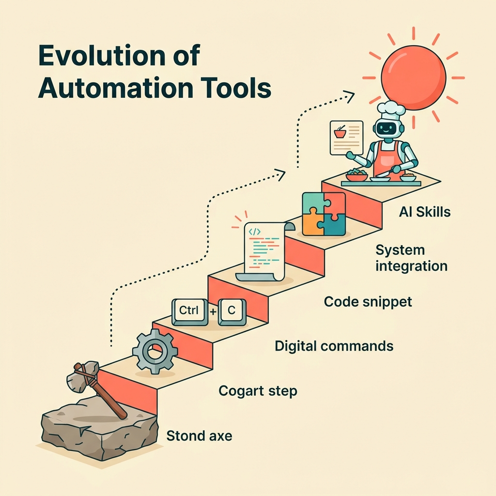
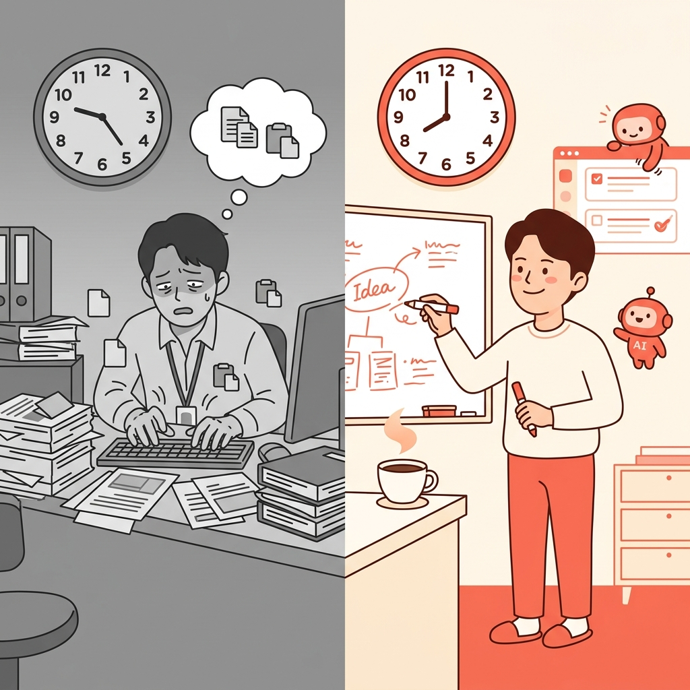

이 부록에 대하여
이 부록은 책 전체에 사용된 <!-- ILLUSTRATION: ... --> 프롬프트를 한곳에 모은 것이에요. 일러스트레이터나 AI 이미지 생성 도구를 사용해서 삽화를 만들 때 참고하세요.
공통 스타일 가이드
모든 일러스트에 적용할 공통 스타일:
- 색상 팔레트: 크림색(#FFF8F0) 배경, 코럴(#E85D4A) 강조, 틸(#2B8C8C) 보조
- 스타일: 따뜻한 플랫 일러스트레이션, 손그림 느낌, 부드러운 텍스처
- 인물: 한국인 캐릭터 중심, 친근하고 다양한 표정
- 분위기: 아늑하고 친근한, 초보자가 위협감을 느끼지 않는 느낌
- AI 캐릭터: 코럴색의 부드러운 빛으로 된 친근한 형태, 로봇처럼 보이지 않게
제1부: 시작하기 전에 (챕터 1-3)
챕터 1: AI와 대화한다는 것
일러스트 1-1: 카페에서 AI와 대화
섹션: 오프닝
A cozy Korean cafe scene at night...
권장 스타일: flat vector, warm colors, Korean characters, cozy cafe atmosphere, hand-drawn with soft textures
일러스트 1-2: 핸드폰 키보드 vs 생성형 AI
섹션: 생성형 AI, 대체 뭔데?
A split-screen comparison illustration...

권장 스타일: flat vector, split-screen comparison, warm cream background, coral accent highlights, gentle gradients
일러스트 1-3: 대화 말풍선
섹션: 프롬프팅 — AI에게 말 거는 법
A person sitting at a desk, typing on a laptop...
권장 스타일: flat vector, chat bubble style, warm tones, cream background, relaxed mood
챕터 2: 반복은 지겹다 — 자동화의 본능
일러스트 2-1: 도구 진화 타임라인
섹션: 오프닝
A humorous timeline illustration...

권장 스타일: flat vector, timeline layout, humor, warm palette, hand-drawn with gentle humor
일러스트 2-2: 자동화 도구 계단
섹션: 인간의 위대한 귀찮음
A visual metaphor showing the evolution of automation tools as a staircase...

권장 스타일: flat vector, staircase metaphor, upward progression, coral and teal accents
일러스트 2-3: Before/After
섹션: 다시 민수 씨 이야기
A before-and-after split illustration...

권장 스타일: flat vector, before-after split, contrast in mood, warm cream background
챕터 3: "내가 만든 도구를 나눠준다"
일러스트 3-1: 공동 주방/워크숍
섹션: 오프닝

권장 스타일: flat vector, communal gathering, diverse characters, warm lighting, joyful collaborative atmosphere
일러스트 3-2: 거인의 어깨
섹션: 오픈소스가 만든 세상

권장 스타일: flat vector, human tower, playful, uplifting, warm cream with coral accents
일러스트 3-3: 글로벌 마을 장터
섹션: GitHub — 공유의 장터

권장 스타일: flat vector, marketplace scene, multicultural, network connections, warm cream sky with coral sunset
제2부: 스킬 패키지 해부하기 (챕터 4-7)
챕터 4: 스킬 패키지란?
일러스트 4-1: 첫 출근의 문서 전달
섹션: 오프닝

권장 스타일: flat vector, office scene, welcoming mood, warm cream and coral, soft golden glow
일러스트 4-2: 단일 파일 폴더
섹션: 세상에서 가장 단순한 스킬

권장 스타일: flat vector, minimal composition, warm cream background, coral folder tab accent, gentle shadows
일러스트 4-3: Before/After 스킬 적용
섹션: 실제 이야기

권장 스타일: flat vector, before-after split, dramatic but humorous contrast, warm cream background
챕터 5: 뼈대 살펴보기 — 파일 구조와 규칙
일러스트 5-1: 세 건물 (세 가지 레벨)
섹션: 오프닝

권장 스타일: flat vector, three buildings comparison, warm cream and coral, friendly and non-intimidating
일러스트 5-2: 식물 성장 과정
섹션: 어디서 시작하면 좋을까?

권장 스타일: flat vector, growth progression, warm cream background, coral and green accents, start small grow naturally
챕터 6: 프론트매터: 스킬의 신분증
일러스트 6-1: 스킬 ID 사무소
섹션: 오프닝

권장 스타일: flat vector, government office humor, warm cream walls, coral accents, humorous and light
일러스트 6-2: AI 스킬 면접장
섹션: 각 항목 뜯어보기 (description)

권장 스타일: flat vector, job interview humor, warm cream background, coral accents, hand-drawn humorous
챕터 7: references/ — 스킬의 참고서 폴더
일러스트 7-1: 선생님의 가방
섹션: 오프닝

권장 스타일: flat vector, school hallway, warm cream with coral accents, helpful and organized mood
일러스트 7-2: 모듈화된 지식 구조
섹션: references/ 안에 뭘 넣을까?

권장 스타일: flat vector, mind map layout, warm cream background, coral and teal accents, update once benefit everywhere
일러스트 7-3: 제2부 완료 산꼭대기
섹션: 제2부를 마치며

권장 스타일: flat vector, mountain peak celebration, warm cream with coral sunset, celebratory mood
제3부: 직접 만들어보기 (챕터 8-13)
챕터 8: 첫 번째 스킬: "인사하기"
일러스트 8-1: 첫 스킬 탄생
섹션: 오프닝

권장 스타일: flat vector, workshop scene, celebratory mood, warm cream background, coral and teal accents
일러스트 8-2: 텍스트 에디터 화면
섹션: Step 2: SKILL.md 작성하기

권장 스타일: flat vector, text editor close-up, warm lighting, cream and coral palette, cozy atmosphere
일러스트 8-3: AI 인격 변형 3종
섹션: 변형 도전! 나만의 색깔 입히기

권장 스타일: flat vector, three character variations, playful and humorous, warm cream background
챕터 9: 프롬프트 엔지니어링 기초
일러스트 9-1: 영화 감독과 AI 배우
섹션: 오프닝

권장 스타일: flat vector, theater/movie set, spotlight effects, playful hand-drawn, fun and creative mood
일러스트 9-2: 예시의 힘 (모호한 지시 vs 예시 제공)
섹션: 원칙 3: 예시 보여주기 (Few-shot)

권장 스타일: flat vector, split-screen comparison, warm cream background, coral highlights, before/after transformation
챕터 10: 도구 연결하기 — allowed-tools의 세계
일러스트 10-1: 도구 없는 셰프 vs 풀장비 셰프
섹션: 오프닝

권장 스타일: flat vector, before-after kitchen transformation, humorous, warm cream background, coral tool accents
일러스트 10-2: 세 가지 스킬 타입
섹션: 자주 쓰는 도구 조합

권장 스타일: flat vector, three panel comparison, teal/coral/gold accents, playful hand-drawn
챕터 11: references로 지식 확장하기
일러스트 11-1: 아늑한 도서관
섹션: 오프닝

권장 스타일: flat vector, cozy library, cream background, coral thread connections, teal bookshelf accents
일러스트 11-2: SKILL.md와 references 관계도
섹션: 실전: 한국어 이메일 작성기 스킬

권장 스타일: flat vector, relationship diagram, warm cream background, coral arrows, teal icons
챕터 12: 템플릿과 변수 — SKILL.md.tmpl 활용
일러스트 12-1: 쿠키 커터 베이커리
섹션: 오프닝

권장 스타일: flat vector, bakery scene, cookie cutter metaphor, warm cream background, playful hand-drawn
일러스트 12-2: 공장 컨베이어 벨트
섹션: 실전: 언어별 코드 리뷰 스킬 템플릿

권장 스타일: flat vector, factory conveyor belt, Willy Wonka vibe, warm cream background, coral machine accents
챕터 13: 테스트하고 다듬기
일러스트 13-1: 셰프의 맛보기
섹션: 오프닝

권장 스타일: flat vector, kitchen scene, taste-testing, warm cream background, coral apron, teal checklist
일러스트 13-2: 테스트 장애물 코스
섹션: 테스트 4단계 (3단계: 엣지 케이스)

권장 스타일: flat vector, obstacle course, playful, warm cream background, coral obstacles, teal checkmarks
일러스트 13-3: 도자기 다듬기 과정
섹션: 실제 개선 과정 엿보기

권장 스타일: flat vector, pottery iteration, warm cream background, coral pot color, teal hands, iterative improvement
제4부: 더 멀리 — 성장하는 스킬 (챕터 14-16)
챕터 14: 여러 스킬을 하나로 — 모노레포 패턴
일러스트 14-1: 푸드코트 전경
섹션: 오프닝

권장 스타일: flat vector, bird's-eye view, organized layout, warm colors, Korean characters
일러스트 14-2: 모노레포 구조 다이어그램
섹션: 모노레포의 구조 살펴보기

권장 스타일: flat vector, architectural diagram, clean layout, warm cream and coral
일러스트 14-3: 완성된 모노레포
섹션: 직접 만들어보기

권장 스타일: flat vector, desk scene, satisfaction moment, warm colors
챕터 15: 팀과 함께 쓰는 스킬 — 공유와 설치
일러스트 15-1: 이웃에게 레시피 나누기
섹션: 오프닝

권장 스타일: flat vector, neighborhood sharing, community warmth, Korean apartment setting
일러스트 15-2: 공유 3단계 플로우
섹션: 내 스킬 공유하기

권장 스타일: flat vector, flow diagram, gift delivery metaphor, minimal clean style
챕터 16: 커뮤니티에 기여하기
일러스트 16-1: 졸업식 장면
섹션: 오프닝

권장 스타일: flat vector, celebration, graduation vibe, diverse crowd, warm joyful colors
일러스트 16-2: PR 과정 3단계
섹션: Pull Request 보내기

권장 스타일: flat vector, step-by-step panels, friendly process diagram
일러스트 16-3: 감정 여행 지도
섹션: 첫 기여의 감정 여행

권장 스타일: flat vector, journey map, emotional progression, hilltop victory, encouraging tone
부록 B 표지 일러스트
부록 B 표지: 아티스트 스튜디오
섹션: 부록 B 상단

권장 스타일: flat illustration, artist studio, warm cream background, soft lighting, coral and teal color swatches
전체 일러스트 수 요약
일러스트 통계
제1부 (챕터 1-3): 9개
제2부 (챕터 4-7): 10개
제3부 (챕터 8-13): 12개
제4부 (챕터 14-16): 8개
부록 표지: 1개
합계: 40개